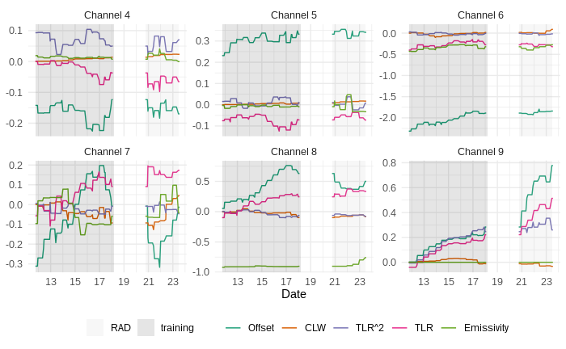
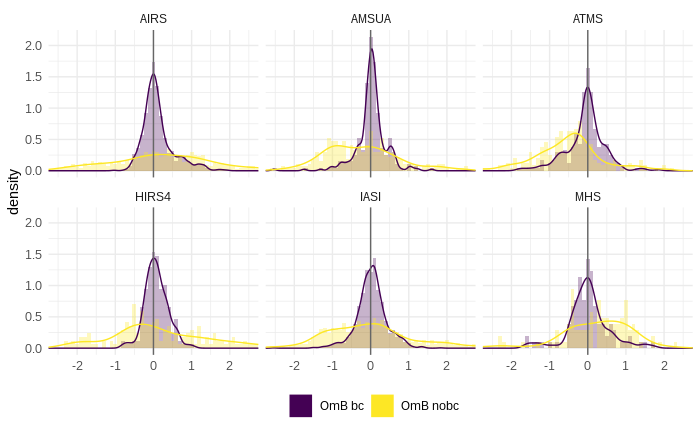

Assimilating Radiance Observations
Assimilating radiance observations is more complicated than assimilating conventional observations as radiances are not state variables. We need a observation operator to transform the model variables to radiances. GSI uses the Community Radiative Transfer Model (CRTM, Liu et al. 2008) as an operator of the radiance observations that calculates the brightness temperature simulated by the model in order to compare it with the observations from satellite sensors.
The CRTM radiative transfer model
The CRTM is a fast radiative transfer model that was jointly developed by the NOAA Center for Satellite Applications and Research and the Joint Center for Satellite Data Assimilation (JCSDA). It is a model widely used by the remote sensing community as it is open source and publicly available. In addition, it is used for satellite instrument calibration (Weng et al. 2013; Iacovazzi et al. 2020; Crews et al. 2021), and in turn to generate retrievals from satellite observations (Boukabara et al. 2011; H. Hu et al. 2019; H. Hu and Han 2021). It is also used as an operator of observations as part of the assimilation of satellite radiances (Tong et al. 2020; Barton et al. 2021).
The CRTM is capable of simulating microwave, infrared and visible radiances, under clear and cloudy sky conditions, using atmospheric profiles of pressure, temperature, humidity and other species such as ozone. Recently Cutraro, Galligani, and Skabar (2021) evaluated their takeoff in the region with good results in simulating GOES-16 observations.
CRTM is a sensor-oriented radiative transfer model, i.e. it contains pre-calculated parameterizations and coefficient tables specifically for operational sensors. It includes modules that calculate thermal radiation from gaseous absorption, absorption and scattering by aerosols and clouds, and emission and reflection of radiation by the Earth’s surface. The inputs of CRTM include atmospheric state variables, e.g., temperature, water vapor, pressure, and ozone concentration in user-defined layers, and surface state variables and parameters, including emissivity, surface temperature, and wind.
CRTM is capable to simulate satellite observations from the state of the atmosphere. This is necessary during the assimilation process but is also used to verify the accuracy and errors of radiance observations.
The necessary calculations to simulate observations has a very high computational cost as it requires transposing a high dimensional matrix and the minimization of a cost function. This \(K^{*}\) matrix is constructed from the partial derivatives of the radiances with respect to geophysical parameters. CRTM performs these calculations very quickly so it can be used in operational contexts.
To obtain fast results, CRTM applies certain simplifications and approximations when solving the radiative transfer equation. First, it assumes that the Earth’s atmosphere consists of plane-parallel and homogeneous layers in thermodynamic equilibrium and where three-dimensional and polarization effects can be ignored.
In the context of clear skies, it is also assumed that there is no scattering and only the absorption of gases in the atmosphere is considered. In cloudy skies, the scattering generated by clouds is included. In the latter case, the radiative transfer equation cannot be solved analytically and numerical solutions are used.
Specific configuration
The vertical location of each radiance observation was estimated as the model level at which its weight function computed by CRTM was maximized. The weight function of each channel corresponds to the change in transmittance with height and its maximum describes the layer of the atmosphere from which the radiation captured by the channel was emitted. Multispectral sensors have good vertical coverage and are capable of capturing from the lower troposphere to the lower stratosphere. The channels chosen for assimilation and their associated errors were defined taking into account the configuration that GSI uses to generate GFS analyses and forecasts, the model cap chosen in this work (50 hPa) and the possible influence of the surface (Table @ref(tab:table-rad)).
Observation errors and quality control
The preprocessing and quality control of the data is an essential step in the assimilation of radiances and depends on each sensor and channel. This process includes spatial thinning, bias correction, and in clear-sky applications, the detection of cloudy sky observations.
Thinning
During the thinning process the observations to be assimilated are chosen based on their distance to the model grid points, the quality of the observation (based on available data quality information) and the number of available channels (for the same pixel and sensor). The thinning algorithm determines the quality of each observation based on the available information about the channels and their known errors, the type of surface below each pixel (preferring observations over the sea to those over land or snow) and predictors that give information about the quality of the observations (M. Hu et al. 2018). By applying the thinning we avoid incorporating information from smaller scale processes than the model can not represent and to reduce the error correlation of the observations from the same sensor.
Bias correction
After the thinning, a bias correction is applied. The bias correction methodology implemented in GSI depends on thermodynamic characteristics of the air and on the scan angle (Zhu et al. 2014). It is computed as a linear polynomial of N predictors \(p_i(x)\), with associated coefficients \(beta_i\). Therefore, the bias-corrected brightness temperature (\(BT_{cb}\)) can be obtained as:
\[\mathrm{\mathit{BT_{cb}} =\mathit{ BT} + \sum_{i = 0}^{N} \beta_i p_i (x)}\]
The polynomial has a constant bias correction term (\(p_0 = 1\)) while the remaining terms and their predictors are the cloud liquid water (CLW) content, the rate of change of temperature with pressure, the square of the rate of change of temperature with pressure, and the sensitivity to the surface emissivity to account for the difference between land and sea. The scan angle-dependent bias is modeled as a polynomial of 4\(^\circ\) order (Zhu et al. 2014).
In the GSI system, the coefficients \(beta_i\) are trained using a variational estimation method that generates the \(beta_i\) that provides the best fit between the simulation and the observations. The EnKF step also calculate the coefficients for the assimilation.
It is important to evaluate the training of the coefficients and the performance of the bias correction. One way to train the coefficients according to (zhu2024?) is to run the assimilation cycles for a long period of time, updating the coefficients at each cycle. While is possible to start the training with coefficients equal to zero, using the coefficients the GFS generates can help to speed up the process.
To check if the coefficients are correctly trained we can analysed the evolution of the different coefficients for each sensor and channel with time. As an example, here we show the coefficients for AMSU-A on board NOAA-15. Following Zhu et al. (2014), we expected the coefficients to reach a stable range of values after a certain period of time, this is evident for channel 4, 5, 6 and 8 but we see a continuous variation in channels 7 and 9.

Using the resulting coefficients from the training period it is also important to check the impact of the bias correction. An easy way to see this is to calculate the mean difference between the observations and the first-guess (OmB) before and after the correction of the bias for each sensor. In the next figure there is an evident improvement as the mean OmB after the BC is now centered around zero and its standard deviation is smaller. This indicate that the BC correction worked as expected.

The training of the coefficients requires a lot of computational resources and can be challenging for observations from polar satellites used in regional applications. The reason for this is that the observations are only available 1 or 2 times a day, making the training a slow process. It is important to check that GSI is not penalizing the coefficients when there are no observations available.
Cloud detection
The cloud pixel detection methodology depends on the wavelength of the observations. For microwave radiances, potentially cloud-contaminated observations are detected using scattering and Liquid Water Path (LWP) indices calculated from differences between different channels of each sensor (Weston et al. 2019; Zhu et al. 2016). For infrared channels, cloud contaminated observations are detected using the transmittance profile calculated by the CRTM model. In addition, GSI checks the difference between the observations and the simulated brightness temperature to detect cloudy pixels. A particular case is the ABI observations since the cloud mask (level 2 product) available at the same resolution as the observations is used. This cloud mask is generated by combining information from 8 channels of the ABI sensor from the spatial and temporal point of view.
Other quality controls
The GSI quality control filters out those observations from channels close to the visible range over water surfaces with a zenith angle greater than 60\(^{{circ}\) to reject those observations that could be contaminated by reflection. For infrared and microwave observations it also performs an emissivity check to detect observations contaminated by surface effects. Finally, a gross check is applied, i.e. the difference between the observation and the observation simulated by the model is compared with a predefined threshold depending on the observation error to reject erroneous observations.